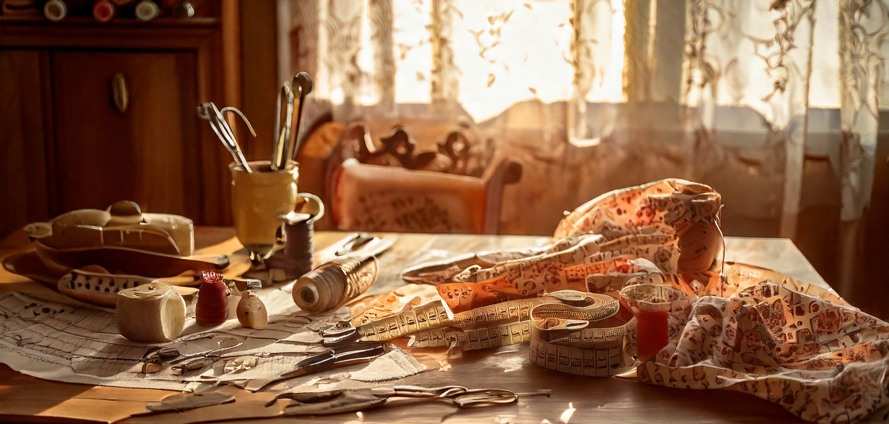
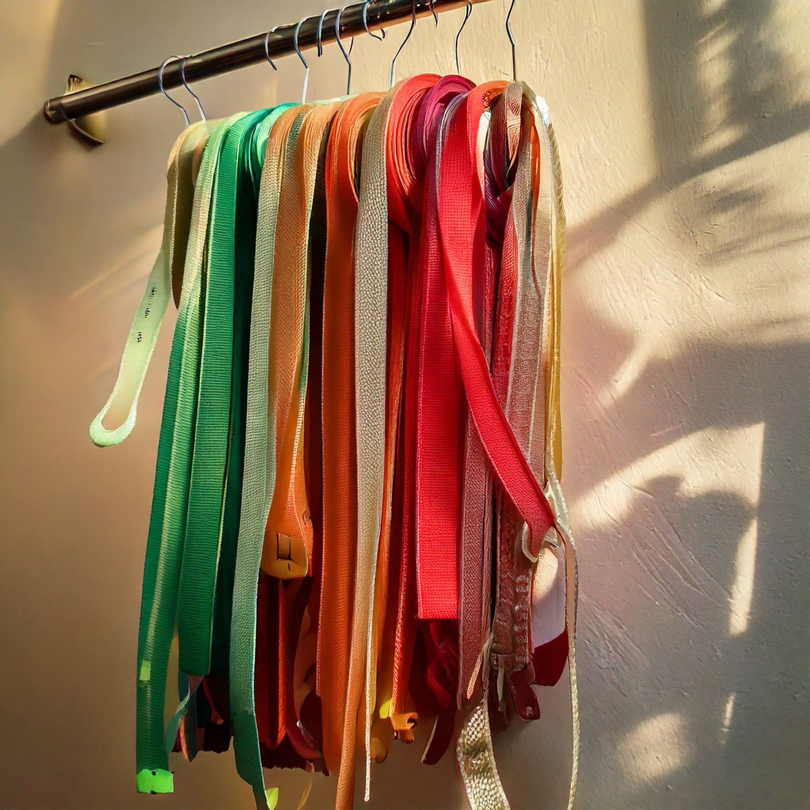

Tekstiler
Før du begynder
Leksikon
Syskrinet
 /*søgefelt*/
Leksikon
Tekst omkring hvordan vi altid er på udkig efter nye tips og triks, så hvis du syntes der mangler noget eller har noget at tilføje til et emne tryk på ->
